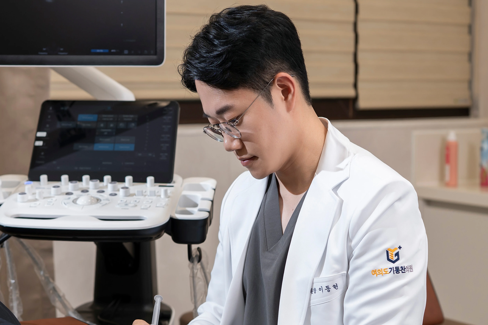
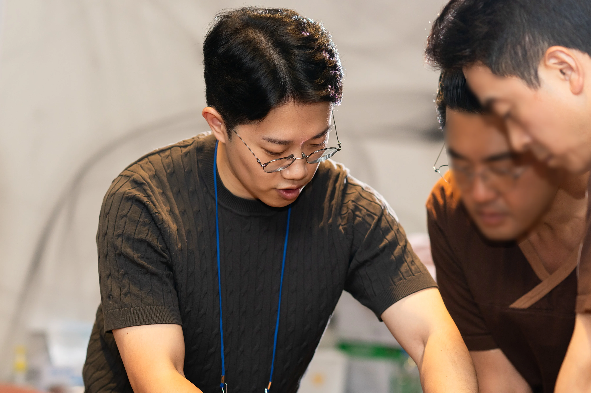

“내 가족에게도 권할 수 있는 치료인지 한 번 더 생각하고, 환자에게 꼭 필요한 치료를 고민하겠습니다.”
왜 아픈지,
그 이유를 더 깊이 보기 시작했습니다.
진료를 하며 같은 부위를 반복해서 치료해도
쉽게 좋아지지 않는 환자들을 자주 만났습니다.
“분명 아픈 데는 이유가 있을 텐데,
내가 그 원인을 놓치고 있는 것은 아닐까.”
“내 가족이라면, 어떤 치료를 해주고 싶을까.”
그 고민은 통증이 나타나는 곳만 보는 것이 아니라,
근육과 신경의 관계를 살피며 통증의 원인을 찾아가는 진료로 이어졌습니다.
통증을 넘어,
다시 일상으로.
원인을 찾아 치료한 뒤
환자분들이 다시 편하게 움직이고,
통증 때문에 포기했던 일상을 되찾는 모습을 보았습니다.
중요한 것은 단순히 통증이 얼마나 줄었는지가 아니라,
그 사람이 다시 자신의 일상으로 돌아갈 수 있는가였습니다.
그런 모습을 볼 때마다
더 잘 치료하고 싶다는 마음도 커졌습니다.

치료를 넘어,
배움을 전합니다.
더 잘 치료하고 싶어
계속 공부하고 수련하며 다양한 환자들을 진료해왔습니다.
현재는 그 경험을 바탕으로
다른 의사들을 대상으로
통증 치료의 술기와 이론을 강의하고 있습니다.
교육을 위해 더 깊이 공부하고 정리하는 과정은
다시 제 진료를 더욱 단단하게 만들고 있습니다.
배움을 멈추지 않고,
그 배움을 다시 환자에게 돌려드리겠습니다.

이동현 대표원장
증상이 아니라 원인을 찾는 통증 주치의
의사를 교육하는 의사
경력
현) 여의도기통찬의원 대표원장
현) 성정원 통사 아카데미 정강사
삼성의료원 수석 전공의 수료 및 전문의 취득
강북삼성병원 외래교수
서울대학교병원 연수
정선군 보건소 공중보건의사 대표 역임
코로나19 대응 공로 강원도지사 표창
전) 성정원통사의원 원장
전) 배곧정형외과의원 원장
전) 연세근본마취통증의학과의원 원장
전) 불광고려마취통증의학과의원 원장
약력 및 학회활동
성정원 통사 아카데미 수료 및 정강사 과정 수료
대한근골격계초음파학회 전문가 과정 수료
대한정형통증의학회 TPI 과정 수료
대한정형통증의학회 정회원
대한척추통증의학회 정회원
대한임상통증학회 정회원
통증기능분석학회 정회원
대한도수의학회 정회원
대한충격파재생의학회 정회원
대한스포츠의학회 평생회원